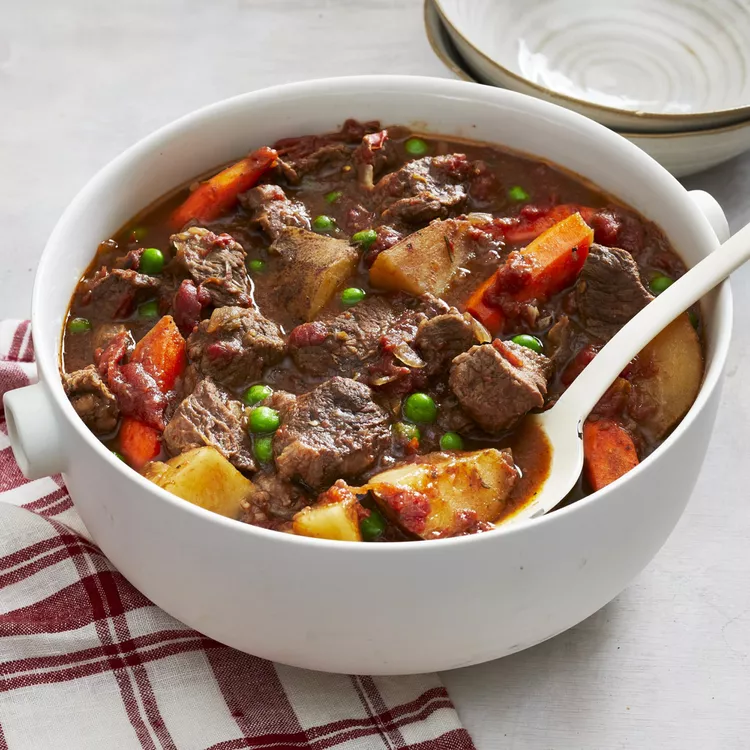

Christmas Eve Beef Stew

This is a family tradition for Christmas Eve!
Serve with a green salad and a loaf of warm bread. It can also be made in
a slow cooker.
Ingridients
- 2 ½ pounds beef stew, diced into 1 inch pieces
- 1 (28 ounce) can stewed tomatoes, with juice
- 1 cup chopped cellery
- 4 carrots sliced
- 3 potatoes, cubed
- 3 onions chopped
- 3 ½ tablespoon tapiaco
- 2 cubes beef bouillon
- ⅛ teaspoon dried thyme
- ⅛ teaspoon dried rosemary
- ⅛ teaspoon dried marjoram
- 1 (10 ounce) package frozen green peas, thawed
Steps
- Preheat the oven to 250 degrees F (120 degrees C).
- Place beef, tomatoes, celery, carrots, potatoes,
onions, and tapioca into a Dutch oven.
Season with beef bouillon,
thyme, rosemary, and marjoram; stir in red wine.
Place the lid on the Dutch oven.
- Bake for 5 to 6 hours in the preheated oven. Add peas during last half hour of cooking.